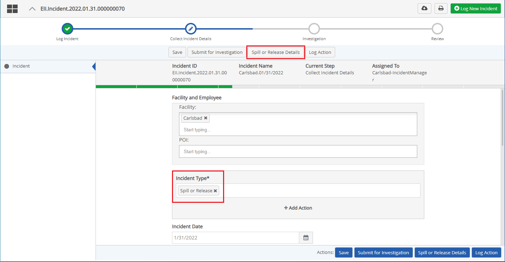
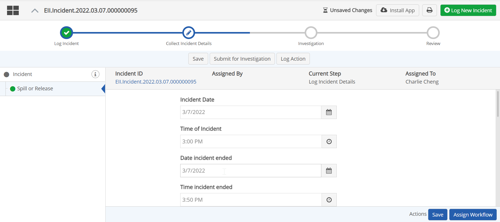
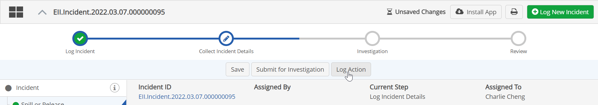
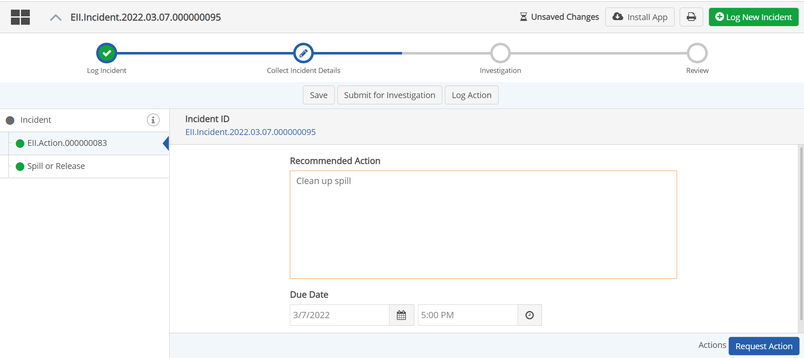
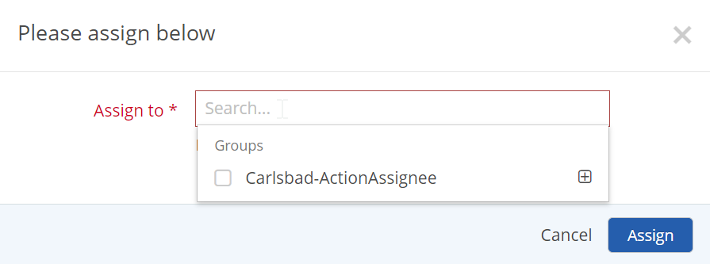

Once you log a new incident, the workflow moves to the step Collect Incident Details (current step is indicated at the top of the screen). One or more buttons will be displayed at the top for creating the sub-forms for collecting incident details, depending on the type of incident that has been logged.

If you are the creator of the original incident log, you may complete the details yourself, or assign them to another user.
To enter incident details:
From the main (parent) incident form, click the [Incident Type] Details button at the top of the screen.
The Incident Details sub-form is displayed as a tab.

Complete the form, according the incident type and fields available.
Click Save to save your changes.
To return to the Incident List, you can collapse the side panel by clicking the X in the Incident Details header. The Incident List pane will then reappear.
The actions available depend on the incident type and your permissions. They may include:
Submit for Investigation: This sends the incident workflow to an optional next step, sending it to the investigation team for further investigation. All required fields (with asterisks or indicated in red) must be completed first.
Witness Details: Create and complete a witness details form.
Log Lost/Restricted Time: Create a log for lost or restricted time and log status changes.
Enter Root Cause: Creates a root cause analysis form to complete.
Log Action: Create a corrective action.
Actions created from the main Action buttons are children of the primary workflow and shown as tabs like other sub-processes. However, actions may also be created from a sub-process (such as the Root Cause Analysis form). In this case the action is related directly to that form, rather than the main workflow, and will be shown on that form, rather than as a tab in the main screen. See Create an Action.
To assign the Incident Details form to another user:
Click the Assign this form to... button at the bottom of the screen.
Click in the "Assign to" box. Start typing the name of an individual or group. After you enter a few characters, a match or list of matches will be offered. Selected the name of the person or group you want.
You may add more than one assignee, if desired. (Any one of the selected assignees may then complete the form.)
Click Assign.
To create an action for the primary Incident workflow:
Select the Log Action button. (The button name may vary.)

In the new Action tab, complete the form.

Click the Assign button.
In the pop-up dialog select an assignee displayed or enter a few characters to search and select from matches. Click the plus sign to shown users in a group and choose an individual. Select the assignee and click Assign.

Assigning a Risk Rank to an Incident
The Risk Rank field allows you to assign a risk rank value to an incident. It may be used to prioritize incidents or for escalation. In the default configuration of the IncidentApp, the Risk Rank field is on the Incident Details step, although your configuration may differ.